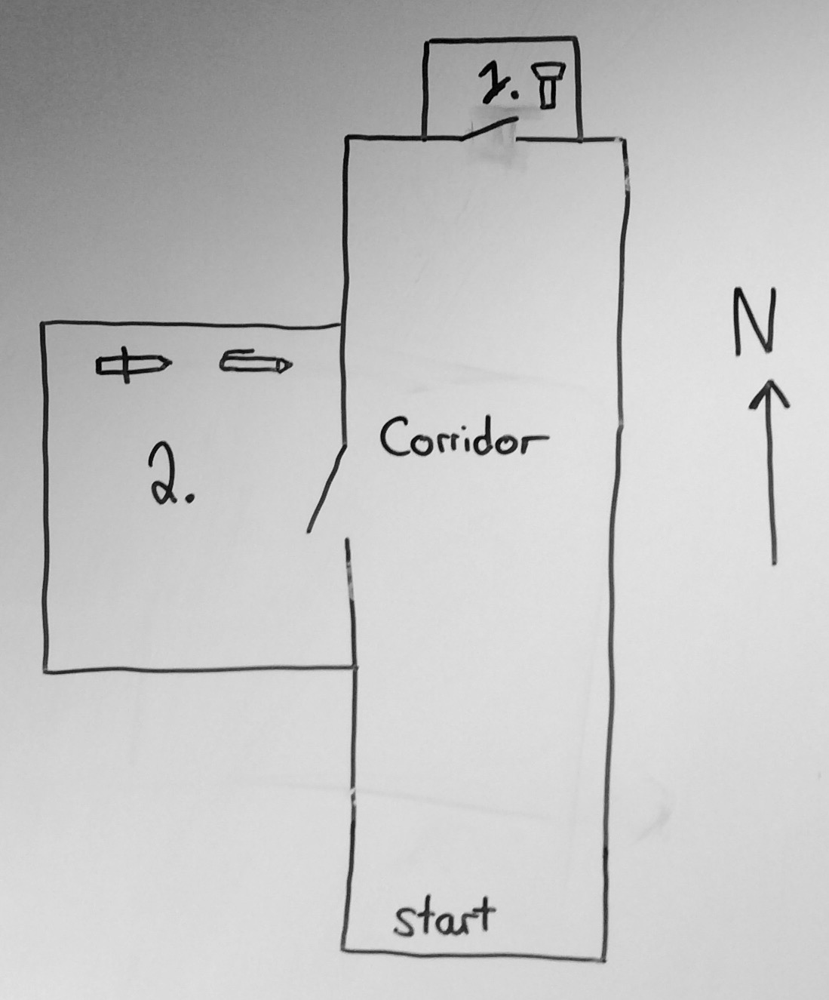

Text Based Games
1 Interactive Fiction
Learn It
- Interactive fiction games are a genre of computer games first pioneered in the 1970s.
- The first games were simple text-adventures, and as computing power grew, so did the games.
- Interactive fiction games have evolved into the modern MMORPGs such as World of Warcraft that are popular amongst today's generation of gamers.
Design It
- In order to create your text adventure, it is important to plan your game well.
- In this project, you'll be making your own game, based on the examples provided.
- The first thing you'll need to do is draw a simple map.
- Here's an example map containing 3 rooms and some items.

- Feel free to make your map a little more complicated if you like. This is just to show you the mechanics of how the game will work.
Learn It
- We're going to use a lot of
functionsin this game, so we had better remind ourselves of what functions are and how they work - A
functionis a block of code that performs a task. - Here's a really simple function.
def HelloWorld(): print('HelloWorld!')
- If you write this code into a script, the
HelloWorld!isn't printed straight away. This is because you need to call the function. - You can call a function by typing it's name into the script, or into your interpreter.
HelloWorld()
- A function can have
argumentspassed into it. To do this, when we declare a function we give itparameters.
def multiplyTwo(x,y): #the x and y are parameters print(x*y) multiplyTwo(4,10) #the 4 and 10 are arguments
- A function can be used to
returna result
def multiplyTwo(num1,num2): return num1*num2 answer = multiplyTwo(3,9) print(answer)
Badge It - Silver
- Use each of the functions below to answer the questions that accompany them.
Function 1
def foo(x,y): return x//y
- What does this function do?
- Write a function call that returns the number 10
Function 2
def bar(x,y): x,y = str(x),str(y) return x + y
- What does this function do?
- Write a function call that returns '15'
- Write a function call that returns 'goodbye'
Function 3
def baz(x): if type(x) == int: for i in range(x): print(i) else: for i in x: print(i)
- What does this function do?
- Write a function call that returns the following
1 2 3 4 5
- Write a function call that returns the following
1 5 1 5 5 1
Function 4
def qux(x): if x == 0: return x else: print(x) qux(x-1)
- What does this function do?
- In your own words, try and describe how it achieves this.
Code It
- Each room in our game is going to be represented by a function.
- When the player enter the room, the function is called.
- Below are the three basic functions for the map used above. Feel free to write your own descriptions.
def corridor(): print('You are in a long corridor') print('There are exits to the North and West') def room1(): print('You are in a small broom cupboard. The air smells musty and it is very dark') print('There are exits to the South') def room2(): print('You are in a very dark room. You can not see anything. You know there is an exit to the East though')
Test It
- You can test your code by running it, and then calling the functions from the interpreter.
Code It
- Now we have the rooms set up, we need to be able to move from room to room.
- To do this efficiently, we need someway of representing our map, so that the program can understand which rooms are connected to which.
- A simple way to manage this would be to use a
dictionary. Thekeywould be the room you are in, and thevaluewould be alistof the available rooms. - Our map would then look something like this.
map = {'corridor':['room1','room2'],'room1':['corridor'],'room2':['corridor']
- The problem with this, is that the program has no idea which direction each room is in.
- This can be solved using empty entries in our lists. If we imagine that the zeroth element of the list is always the room to the North, the first is the room to the East, the second is the room to the South and the third is the room to the West, we can code that there is no room, just by using an empty string =''=
map = {'corridor':['room1','','','room2'],'room1':['','','corridor',''],'room2':['','corridor','','']}
- Use your map to build your own dictionary to act as a map for the program
Code It
- Now comes the tricky part.
- We need to build a function to navigate around the map we've just created.
- Lets start by declaring the function.
def Moving(location): rooms = map[location]
- The function takes a single
argumentwhich islocation. In this case it could be ='corridor'= - It then sets the value of a variable
roomsto be the list of rooms available from themapdictionary - We'd best now add in a list of all available directions, into the function
directions = ['North','East','South','West']
- This next line is very complicated, so don't worry if you don't understand it.
availableDirections = [directions[i] for i,j in enumerate(rooms) if rooms[i] != '']
- It basically creates a new list of the available directions to the player, by comparing the list of all
directionsto the list ofroomsand discarding any that are empty strings.
Badge It - Gold
- Inside the function add 4 lines of code. They should each do the following.
- Set a variable called
directionto be the userinputwhen prompted 'Which direction would you like to go in' - Create a
whileloop that will run while thedirectionis not in the listavailableDirections printthat the player can't go that way (inside the while loop)- Ask the player for the direction they would like to go again (inside the while loop)
- Set a variable called
Code It
- To finish off this part of the game, we need the
Movingfunction to be able to call the room functions when the player has chosen the direction. - Again, this is a little complicated, so don't worry if you don't understand it perfectly.
- At the top of your program, we'll create a new dictionary. This will link
roomto function call.
commands = {'room1':room1,'room2':room2,'corridor':corridor}
- This allows the room to be looked up and the appropriate function call to be applied.
- Lastly we'll need to go back inside your
Movingfunction and add areturn. The return will call the function appropriate for which ever room the player is moving to. - It should look something like this, with the commented section containing your Gold Badge code.
def Moving(location): rooms = map[location] directions = ['North','East','South','West'] availableDirections = [directions[i] for i,j in enumerate(rooms) if rooms[i] != ''] ### YOUR CODE HERE ### YOUR CODE HERE ### YOUR CODE HERE ### YOUR CODE HERE return rooms[directions.index(direction)]
- Now you need to place a correct function call into each of the room functions.
- So for instance, the corridor function would look like this.
def corridor(): print('You are in a long corridor') print('There are exits to the North and West') Moving('corridor')
Try It
- Run your code.
- Use a function call to enter your first room in the interpreter.
corridor()
Badge It - Platinum
- It would be nice if their were more directions available, up and down for instance.
- Alter your map to include some ladders or stairs and then adapt your code to take into account the new directions.